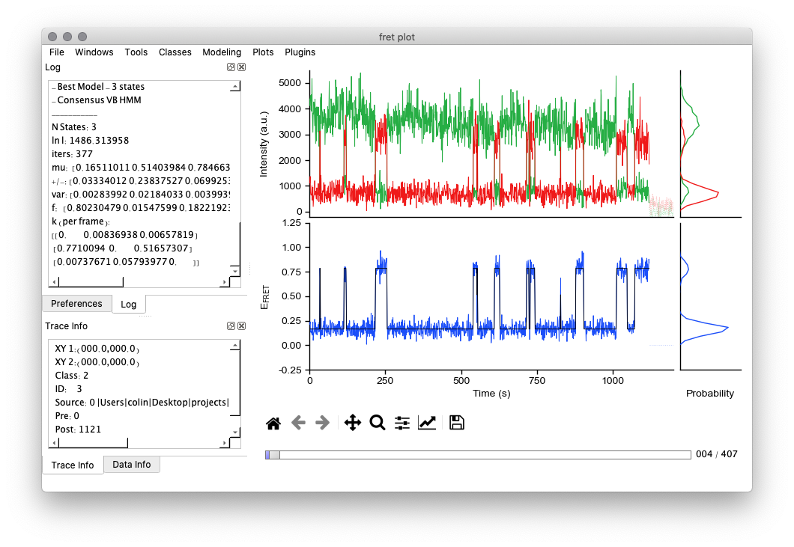
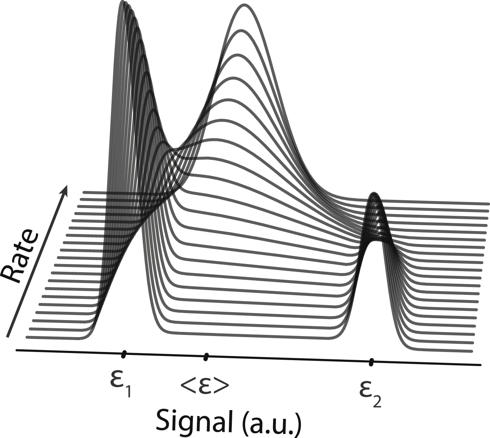

Software and Hardware
We're committed to open source software, and hardware. Primarily a Python, arduino, and C/CUDA lab. Got expertise? Interested in collaborating? Please, get in touch!
tMAVEN Process Data

BIASD Fast Kinetics
BIASD is a method to temporal resolve kinetics any single-molecule time series, even if those kintics are orders of magnitude faster than the time resolution of the technique. Written in python, C, and CUDA

vbscope Analyze Movies
vbscope is software to actively learn what "spots" look like for single-molecule localization microscopy. It is currently unreleased.
Contact us.